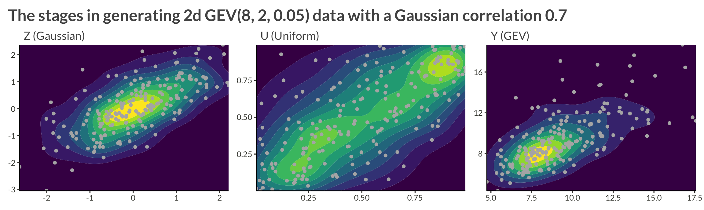

Code
library(gt)
library(tidyverse)
library(patchwork)
library(bggjphd)
theme_set(theme_bggj())library(gt)
library(tidyverse)
library(patchwork)
library(bggjphd)
theme_set(theme_bggj())In a previous post, I wrote about applying the BYM2 model to spatially dependent Generalized Extreme Value (GEV) data and mentioned in passing that I was working on applying copulas as well. In this post I will outline and show results from a simulation study I’ve been running where I:
In the book Elements of Copula Modeling with R, Hofert et al. (2018) define a copula as
a multivariate distribution function with standard uniform univariate margins, that is, U(0, 1) margins.
So, a Copula is any multivariate distribution whose margins is U(0,1 ) distributed. A simple example is the independence copula
\[ \Pi(u) = \prod_{j=1}^{d}{u_j}, \quad \mathbf U \in [0, 1]^d. \]
The central theorem of copula theory is Sklar’s theorem (Sklar 1996) [the original paper is from 1959]. The theorem basically states that for any d-dimensional distribution function, \(H\), with univariate margins \(F_1, \dots, F_d\), there exists a d-dimensional copula \(C\) such that
\[ H(\mathbf x) = C(F_1(x_1), \dots, F_d(x_d)). \]
Alternatively, we can write
\[ C(\mathbf u) = H(F_1^{-1}(u_1), \dots, F_d^{-1}(u_d)) \]
The Gaussian family of copulas can be written
\[ C(\mathbf u | R) = \Phi_d\left(\Phi^{-1}(u_1), \dots, \Phi^{-1}(u_d) \vert R \right), \quad \mathbf u \in [0, 1]^d, \]
where R is a \(d\times d\) correlation matrix, \(\Phi_d\) is the CDF of a d-dimensional multivariate Gaussian with mean \(\mathbf 0\) and covariance matrix \(R\), and \(\Phi\) is the CDF of a standard Gaussian.
Its density is
\[ c(\mathbf u \vert R) = \frac{\phi_d\left(\Phi^{-1}(u_1), \dots, \Phi^{-1}(u_d) \vert R \right)}{ \prod_{j=1}^{d}{\phi\left( \Phi^{-1}(u_j) \right)}}, \quad \mathbf u \in [0, 1]^d, \]
where \(\phi_d\) is the density of the same multivariate Gaussian, and \(\phi\) is the density of a standard gaussian.
Given the correlation matrix, \(R\):
We can then make the margins \(u_1, \dots, u_d\) follow any distribution (f.ex. the GEV distribution) by applying its quantile function.
Let’s sample from a two-dimensional process with GEV(8, 2, 0.05) margins and a Gaussian copula with correlation \(\rho = 0.7\).
R <- matrix(c(1, 0.7, 0.7, 1), nrow = 2)
X <- mvtnorm::rmvnorm(
n = 100,
sigma = R
)
X |>
as_tibble() |>
mutate(
id = row_number()
) |>
pivot_longer(c(-id), names_to = "variable", values_to = "Z") |>
mutate(
U = pnorm(Z),
Y = evd::qgev(U, loc = 8, scale = 2, shape = 0.05)
) |>
pivot_longer(c(-id, -variable)) |>
pivot_wider(names_from = variable, values_from = value) |>
mutate(
name = fct_relevel(name, "Z", "U", "Y") |>
fct_recode(
"Z (Gaussian)" = "Z",
"U (Uniform)" = "U",
"Y (GEV)" = "Y"
)
) |>
group_by(name2 = name) |>
group_map(
function(data, ...) {
data |>
ggplot(aes(V1, V2)) +
geom_density_2d_filled() +
geom_point(col = "grey70") +
coord_cartesian(expand = FALSE) +
theme(legend.position = "none") +
labs(
x = NULL,
y = NULL,
subtitle = data$name
)
}
) |>
wrap_plots() +
plot_annotation(
title = "The stages in generating 2d GEV(8, 2, 0.05) data with a Gaussian copula"
)
R scripts used for simulating the data
The simulated data have GEV margins and an AR(1) Gaussian copula. The steps in simulating the data are as follows.
First, a correlation matrix is generated that encodes an AR(1) process with correlation \(\rho\). To create this correlation matrix, we specify the precision matrix, \(Q\), via
\[ Q = \frac{1}{1 - \rho^2}\begin{bmatrix} 1 & -\rho & \dots & \dots & \vdots\\ -\rho & 1 + \rho^2 & -\rho & \ddots & \vdots \\ \vdots & \ddots & \ddots & \ddots & \vdots \\ \vdots & \ddots &-\rho & 1 + \rho^2 & -\rho \\ \vdots & \dots & \dots & -\rho & 1 \end{bmatrix}. \]
This gives us the correlation matrix, R, where
\[ R = Q^{-1} = \begin{bmatrix} 1 & \rho & \rho^2 & \dots & \rho^n\\ \rho & 1 & \rho & \ddots & \rho^{n-1} \\ \vdots & \ddots & \ddots & \ddots & \vdots \\ \rho^{n-1} & \ddots &\rho & 1 & \rho \\ \rho^n & \dots & \dots & \rho & 1 \end{bmatrix}. \]
make_AR_cor_matrix_1d <- function(n_id, rho = 0.5) {
P <- matrix(
0,
nrow = n_id,
ncol = n_id
)
diag(P) <- 1
for (i in seq(1, n_id - 1)) {
P[i, i + 1] <- -rho
}
for (i in seq(2, n_id)) {
P[i, i - 1] <- -rho
}
for (i in seq(2, n_id - 1)) {
P[i, i] <- 1 + rho^2
}
P <- P / (1 - rho^2)
P_cor <- solve(P)
P_cor
}
n_id <- 5
rho <- 0.5
R <- make_AR_cor_matrix_1d(n_id = n_id, rho = rho)
R [,1] [,2] [,3] [,4] [,5]
[1,] 1.0000 0.500 0.25 0.125 0.0625
[2,] 0.5000 1.000 0.50 0.250 0.1250
[3,] 0.2500 0.500 1.00 0.500 0.2500
[4,] 0.1250 0.250 0.50 1.000 0.5000
[5,] 0.0625 0.125 0.25 0.500 1.0000We then use the well-known fact that if
\[ \mathbf X \sim \mathrm{MVNorm}\left(\boldsymbol \mu, \Sigma\right), \]
then
\[ \boldsymbol X = \boldsymbol \mu + L \boldsymbol Z, \]
where \(\boldsymbol Z \sim \mathrm{Normal}(\boldsymbol 0, I)\) and \(L\) is the Cholesky decomposition of \(R\), or \(LL^T = \Sigma\).
In our case, we want \(\mathbf X\) to have mean 0 and covariance matrix \(R\), so we write
\[ \mathbf X = L\mathbf Z \]
where \(LL^T = R\).
We can skip the manual Cholesky factorization and simply use the {mvtnorm} package.
sample_gaussian_variables <- function(cor_matrix, n_replicates) {
mvtnorm::rmvnorm(
n = n_replicates,
sigma = cor_matrix
)
}
R |>
sample_gaussian_variables(n_replicates = 1) [,1] [,2] [,3] [,4] [,5]
[1,] -2.565599 -0.7567668 -0.2584833 1.430638 0.004611752We will want more than one observation from each “site”, so we write a helped function for tidying this output into a tibble.
tidy_mvgauss <- function(mvnorm_matrix) {
colnames(mvnorm_matrix) <- seq_len(ncol(mvnorm_matrix))
mvnorm_matrix |>
dplyr::as_tibble() |>
dplyr::mutate(
replicate = dplyr::row_number(),
.before = `1`
) |>
tidyr::pivot_longer(
c(-replicate),
names_to = "id", names_transform = as.numeric,
values_to = "Z"
)
}
n_replicates <- 10
mvnorm_data <- R |>
sample_gaussian_variables(n_replicates = n_replicates) |>
tidy_mvgauss()
mvnorm_data |>
gt() |>
opt_interactive()Now our data, \(\mathbf X\), is multivariate normal with dependence structure according to an AR(1) process, but marginally each \(X_1\) is standard normal. To transform this data to a GEV dataset, we simply use the standard normal CDF on each \(X_i\) to transform it to \([0, 1]\), then we use the GEV quantile function to transform that to a GEV distributed variable.
mvnorm_to_gev <- function(mvnorm_data, gev_params) {
mvnorm_data |>
dplyr::mutate(
U = pnorm(Z)
) |>
dplyr::inner_join(
gev_params,
by = dplyr::join_by(id)
) |>
dplyr::mutate(
y = purrr:::pmap_dbl(
list(U, mu, sigma, xi),
\(U, mu, sigma, xi) evd::qgev(p = U, loc = mu, scale = sigma, shape = xi)
)
)
}
gev_params <- expand_grid(
mu = 6,
sigma = 3,
xi = 0.1,
id = seq_len(n_id)
)
gev_data <- mvnorm_data |>
mvnorm_to_gev(gev_params = gev_params)
gev_data |>
select(-mu, -sigma, -xi) |>
gt() |>
opt_interactive()Let’s create a function that plots heat maps for each of the three representations of the data
We want the color scales to be free, so we use group_map() and wrap_plots() instead of facet_wrap()
plot_data <- function(data) {
data |>
select(replicate, id, Z, U, y) |>
pivot_longer(c(-replicate, -id)) |>
mutate(
name = fct_relevel(name, "Z", "U", "y"),
name2 = name
) |>
group_by(name) |>
group_map(
function(data, ...) {
data |>
ggplot(aes(id, replicate, fill = value)) +
geom_raster() +
coord_cartesian(expand = FALSE) +
theme(legend.position = "none") +
labs(
subtitle = data$name2
)
}
) |>
wrap_plots() +
plot_layout(nrow = 1) +
plot_annotation(
title = "Heatmaps of the three data representations",
subtitle = "Z: Normal | U: Uniform | y: GEV"
)
}gev_data |>
plot_data()
It’s nice to wrap this process in a single function
make_data <- function(gev_params, n_replicate, rho) {
make_AR_cor_matrix_1d(n_id = nrow(gev_params), rho = rho) |>
sample_gaussian_variables(n_replicates = n_replicate) |>
tidy_mvgauss() |>
dplyr::mutate(
U = pnorm(Z)
) |>
dplyr::inner_join(
gev_params,
by = dplyr::join_by(id)
) |>
dplyr::mutate(
y = purrr::pmap_dbl(
list(U, mu, sigma, xi),
\(U, mu, sigma, xi) evd::qgev(p = U, loc = mu, scale = sigma, shape = xi)
)
)
}Let’s see how the data look if we make it larger and increase the correlation
n_id <- 40
n_replicates <- 100
gev_params <- expand_grid(
mu = 6,
sigma = 3,
xi = 0.1,
id = seq_len(n_id)
)
d <- make_data(gev_params, n_replicates, rho = 0.95)We see that with higher neighbor correlations we get obvious horizontal stripes corresponding to a large amount of dependence within each replicate.
d |> plot_data()
I wrote two different models in stan.
functions {
real gev_lpdf(real y, real mu, real sigma, real xi) {
if (abs(xi) < 1e-10) {
real z = (y - mu) / sigma;
return -log(sigma) - z - exp(-z);
} else {
real z = 1 + xi * (y - mu) / sigma;
if (z > 0) {
return -log(sigma) - (1 + 1/xi) * log(z) - pow(z, -1/xi);
} else {
reject("Found incompatible GEV parameter values");
}
}
}
real normal_copula_prec_lpdf(vector U, matrix L) {
int N = rows(U);
vector[N] Z = inv_Phi(U);
vector[N] mu = rep_vector(0, N);
matrix[N, N] I = diag_matrix(rep_vector(1, N));
return multi_normal_prec_lpdf(Z | mu, L) - multi_normal_prec_lpdf(Z | mu, I);
}
}
data {
int<lower = 0> n_replicate;
int<lower = 0> n_id;
array[n_replicate, n_id] real y;
array[n_replicate, n_id] real y_test;
}
parameters {
real<lower = 0> mu;
real<lower = 0> sigma;
real<lower = 0, upper = 0.5> xi;
real<lower = -1, upper = 1> rho;
}
model {
# Defining the precision matrix Q
real rho_scaler = pow(1 - rho^2, -1);
real diag_inside = rho^2 * rho_scaler;
real off_diag = -rho * rho_scaler;
matrix[n_id, n_id] Omega = diag_matrix(rep_vector(rho_scaler, n_id));
Omega[2:(n_id - 1), 2:(n_id - 1)] = add_diag(Omega[2:(n_id - 1), 2:(n_id - 1)], diag_inside);
for (i in 1:n_id) {
if (i > 1) {
Omega[i, i - 1] = off_diag;
}
if (i < n_id) {
Omega[i, i + 1] = off_diag;
}
}
for (i in 1:n_replicate) {
vector[n_id] U;
for (j in 1:n_id) {
U[j] = gev_cdf(y[i, j] | mu, sigma, xi);
target += gev_lpdf(y[i, j] | mu, sigma, xi);
}
target += normal_copula_prec_lpdf(U | Omega);
}
}
generated quantities {
real log_lik = 0;
{
# Creating Q inside brackets, since I don't want to include it in the model output
real rho_scaler = pow(1 - rho^2, -1);
real diag_inside = rho^2 * rho_scaler;
real off_diag = -rho * rho_scaler;
matrix[n_id, n_id] Omega = diag_matrix(rep_vector(rho_scaler, n_id));
Omega[2:(n_id - 1), 2:(n_id - 1)] = add_diag(Omega[2:(n_id - 1), 2:(n_id - 1)], diag_inside);
for (i in 1:n_id) {
if (i > 1) {
Omega[i, i - 1] = off_diag;
}
if (i < n_id) {
Omega[i, i + 1] = off_diag;
}
}
for (i in 1:n_replicate) {
vector[n_id] U;
for (j in 1:n_id) {
U[j] = gev_cdf(y_test[i, j] | mu, sigma, xi);
log_lik += gev_lpdf(y_test[i, j] | mu, sigma, xi);
}
log_lik += normal_copula_prec_lpdf(U | Omega);
}
}
}functions {
real gev_lpdf(real y, real mu, real sigma, real xi) {
if (abs(xi) < 1e-10) {
real z = (y - mu) / sigma;
return -log(sigma) - z - exp(-z);
} else {
real z = 1 + xi * (y - mu) / sigma;
if (z > 0) {
return -log(sigma) - (1 + 1/xi) * log(z) - pow(z, -1/xi);
} else {
reject("Found incompatible GEV parameter values");
}
}
}
}
data {
int<lower = 0> n_replicate;
int<lower = 0> n_id;
array[n_replicate, n_id] real y;
array[n_replicate, n_id] real y_test;
}
parameters {
real<lower = 0> mu;
real<lower = 0> sigma;
real<lower = 0, upper = 0.5> xi;
}
transformed parameters {
}
model {
for (i in 1:n_replicate) {
for (j in 1:n_id) {
target += gev_lpdf(y[i, j] | mu, sigma, xi);
}
}
}
generated quantities {
real log_lik = 0;
{
for (i in 1:n_replicate) {
for (j in 1:n_id) {
log_lik += gev_lpdf(y_test[i, j] | mu, sigma, xi);
}
}
}
}